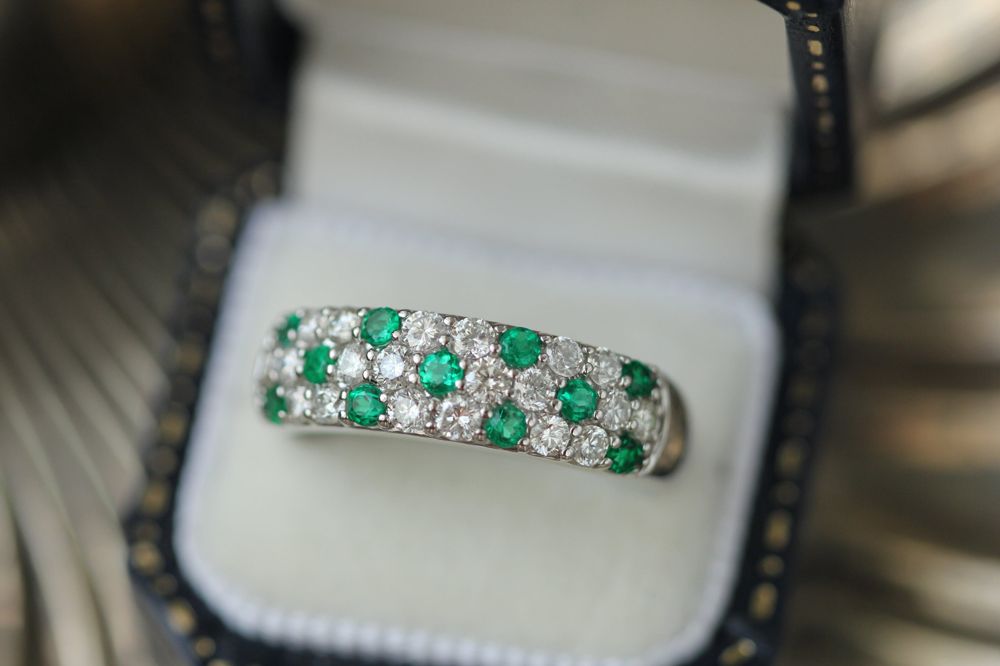

Our products
OUR PRODUCTS

The one ring
Water in mars
Gold bites


This is one of our best sellers, forged in our best workshop evrything of this product is exclusive and totally real,
emeralds from mines in Africa,silver of our mines in China and transported and made with a lot of details and care, known as the ring of the king because it has been used
by some of the most important people of the world, if you´r interested click here and send us your information
Behold the breathtaking beauty of our Sapphire Rings, where each ring encapsulates the deep, mesmerizing hues of blue sapphires.
Illuminate your world with the enchanting radiance that emanates from these stunning gemstones.Embrace a sense of timeless sophistication with a sapphire ring that transcends trends.
The deep blue tones effortlessly blend tradition and modernity, making it the perfect accessory for every occasion.if you´r interested click here and send us your information
Crafted with precision and passion, our gold rings are more than just accessories; they are symbols of timeless elegance.
The shimmering gold radiates a warmth that complements every skin tone, making you stand out in any crowd.Embrace the luxury of a gold ring that effortlessly combines tradition with modern flair.
Each piece is a masterpiece, meticulously designed to capture the essence of opulence and refinement.if you´r interested click here and send us your information
NEACKLES
Destiny wheel
Silver portal
Holy cross


Whether you're dressing up for a special occasion or adding a touch of glamour to your everyday style, our silver necklaces effortlessly complement any look.
The versatility of silver ensures that you shine with understated grace, making a statement without saying a word
,if you´r interested click here and send us your information
Elevate your style with a touch of silver sophistication. Visit our store today and explore the Sterling Silver Necklace collection –
where every piece tells a story of enduring elegance. Because true beauty is found in the simplicity that withstands
the test of timeif you´r interested click here and send us your information
Our skilled artisans pour passion and precision into every gold necklace, creating pieces that are not just accessories but expressions of art.
Immerse yourself in the craftsmanship that defines luxury, with attention to detail that captivates at every glance.
if you´r interested click here and send us your information